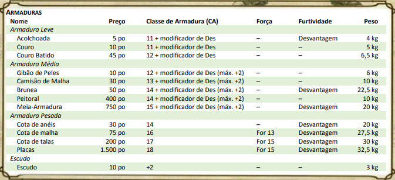
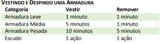

Armaduras e Escudos
Os mundos de D&D são uma vasta tapeçaria composta de muitas culturas diferentes, cada uma com seu próprio nível de tecnologia. Por esta razão, aventureiros têm acesso a uma variedade de tipos de armaduras, que vão desde a armadura de couro à cota de malha, até a cara armadura de placas, com vários outros tipos de armaduras intermediárias entre elas.
A tabela Armaduras reúne os tipos mais comuns de armaduras encontradas no jogo e as separa em três categorias: armaduras leves, armaduras médias e armaduras pesadas. Muitos guerreiros complementam sua armadura com um escudo.
A tabela Armaduras mostra o custo da armadura, o peso, e outras propriedades dos tipos mais comuns de armaduras usadas nos mundos de D&D.
Proficiência em Armaduras. Qualquer um pode colocar uma armadura ou amarrar um escudo no braço. No entanto, somente aqueles proficientes no uso de armaduras sabem como usá-las de forma eficaz. Sua classe concede proficiência com certos tipos de armadura. Se você vestir uma armadura que não tenha proficiência, terá desvantagem em qualquer teste de habilidade, teste de resistência ou jogada de ataque que envolva Força ou Destreza, e não poderá conjurar magias.
estreza, e não poderá conjurar magias. Classe de Armadura (CA). A armadura protege seu usuário de ataques. A armadura (e escudo) que você utiliza determina sua Classe de Armadura base.
Armadura Pesada. Armaduras pesadas interferem na capacidade do usuário mover-se rápido, furtivo e livremente. Se a tabela de Armadura mostrar "For 13" ou "For 15" na coluna Força para um tipo de armadura, a armadura reduz o deslocamento do usuário em 3 metros, a menos que o usuário tenha um valor de Força igual ou maior do que o valor listado.
Furtividade. Se a tabela Armaduras mostrar "Desvantagem" na coluna Furtividade, o usuário terá desvantagem em testes de Destreza (Furtividade).
Escudo. Um escudo é feito de madeira ou metal e é usado com uma mão. Empunhar um escudo aumenta sua Classe de Armadura em 2. Você só pode se beneficiar de um escudo por vez.
Armaduras leves
Feitas a partir de materiais flexíveis e finos, armaduras leves favorecem aventureiros ágeis, uma vez que oferecem alguma proteção sem sacrificar sua mobilidade. Se você vestir uma armadura leve, ele adiciona seu modificador de Destreza ao número base de seu tipo de armadura para determinar sua Classe de Armadura.
Acolchoada. A armadura acolchoada consiste em camadas de panos acolchoados e batidos.
Couro. O peitoral e as ombreiras da armadura de couro são feitos de couro que foi endurecido após ser fervido em óleo. O resto da armadura é feita de materiais mais macios e mais flexíveis.
Couro Batido. Feita de couro resistente, mas flexível, a armadura de couro batido é reforçada com rebites ou cravos.
Armaduras médias
Armaduras médias oferecem mais proteção do que armaduras leves, mas também prejudicam mais o movimento. Se o personagem usar uma armadura média, ele adiciona seu modificador de Destreza, até um máximo de 2, ao número base de seu tipo de armadura para determinar a sua Classe de Armadura.
Gibão de Peles. Um gibão de peles é um armadura bruta consistindo de peles grossas. É comumente usada por tribos bárbaras, humanoides malignos e outros povos que não têm acesso às ferramentas e materiais necessários para criar uma armadura melhor.
Camisão de Malha. Feito de anéis de metal intercalados, um camisão de cota de malha é usado entre as camadas de roupa. Essa armadura oferece proteção modesta para a parte superior do corpo de quem a usa e permite que o som dos anéis de metal, friccionados uns contra os outros, sejam amortecidos pelas camadas exteriores.
Brunea. Essa armadura consiste em um casaco e calças (e talvez uma saia separada) de couro coberto com peças sobrepostas de metal, assim como as escamas de peixe. O conjunto inclui manoplas.
Peitoral. A armadura peitoral é constituída por um peitoral de metal usado com couro flexível em seu interior. Embora ele deixe as pernas e braços do usuário relativamente desprotegidos, essa armadura fornece boa proteção para seus órgãos vitais, deixando quem a usa relativamente sem restrições.
Meia-Armadura. Essa armadura é composta de placas de metal moldadas que cobrem a maior parte do corpo. Ela não inclui proteção para as pernas além de caneleiras fixadas com tiras de couro.
Armaduras Pesadas
De todas as categorias de armaduras, as armaduras pesadas oferecem a melhor proteção. Essas armaduras cobrem todo o corpo e são projetadas para proteger quem as usa de uma grande variedade de ataques. Só guerreiros proficientes podem gerir o seu peso e volume.
Armaduras pesadas não permitem que o usuário adicione seu modificador de Destreza na Classe de Armadura, mas também não o penaliza se seu modificador de Destreza for negativo.
Cota de Anéis. Esta armadura é feita de couro com pesados anéis presos a ela. Os anéis ajudam a reforçar a armadura contra golpes de espadas e machados. A cota de anéis é inferior à cota de malha e geralmente é vestida apenas por aqueles que não podem pagar por uma armadura melhor.
Cota de Malha. Feita de anéis de metal entrelaçados, a cota de malha inclui uma camada de tecido acolchoado usada por baixo da malha de metal para evitar atrito e amortecer o impacto dos golpes. O conjunto inclui manoplas.
Cota de Talas. Essa armadura é feita de tiras verticais de metal, rebitadas a um suporte de couro, usadas sobre um preenchimento de pano. Cotas de malha flexíveis protegem as articulações.
Placas. A armadura de placas consiste em placas de metal moldadas para cobrir todo o corpo. Inclui luvas, botas de couro pesadas, um capacete com viseira e espessas camadas de enchimento por baixo da armadura. Fivelas e tiras de couro distribuem o peso ao longo do corpo.
ENTRANDO E SAINDO DE UMA ARMADURA
O tempo que leva para vestir ou despir uma armadura depende da categoria.
Vestir. Esse é o tempo necessário para colocar a armadura. Você se beneficia da CA da armadura só se despender o tempo integral para vestir o conjunto da armadura.
Remover. Esse é o tempo necessário para despir uma armadura. Se alguém ajudá-lo, reduza esse tempo pela metade.
